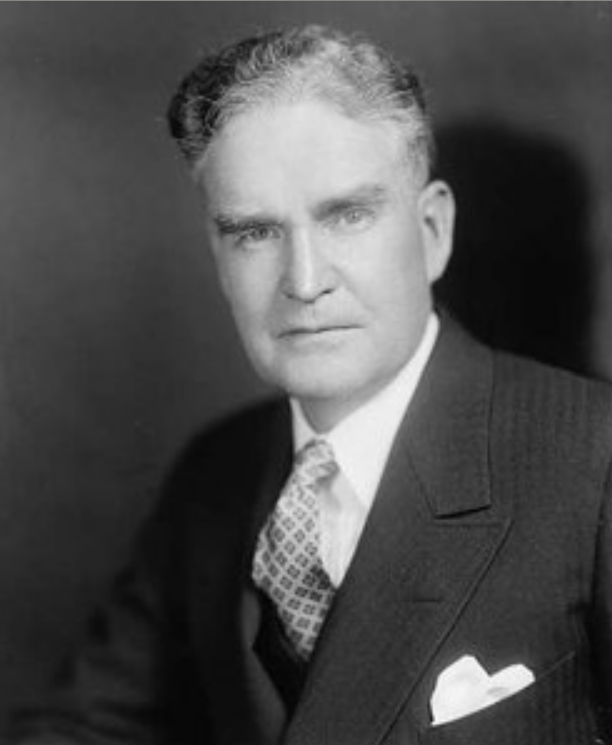
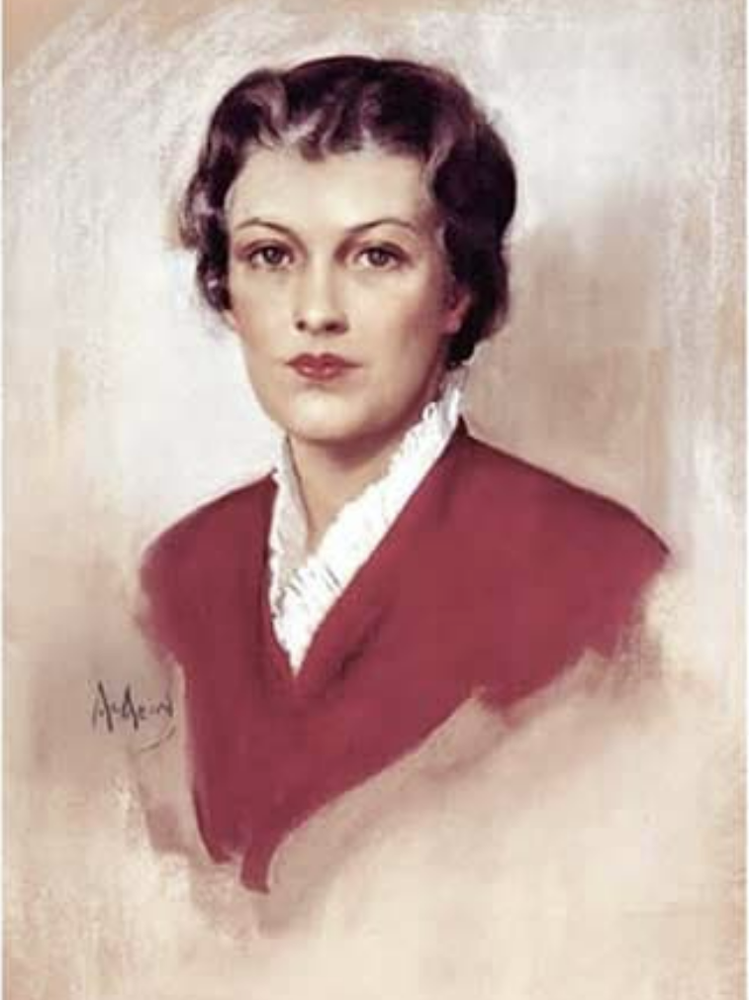

About Betty Crocker
The Birth of an Icon
Betty Crocker was created in 1921 by Washburn-Crosby and advertiser Bruce Barton. Under Marjorie Husted's supervision, the image of Betty Crocker became the "Zeus" of General Mills.
First Lady of Food
By the early 1940s, Betty Crocker was known to nine out of ten American homemakers. In 1945, Fortune magazine named her the second best-known woman in America, following First Lady Eleanor Roosevelt.
Evolving with America
Betty Crocker's image has changed seven times over the past century, reflecting the changing fashions and roles of American women. Through it all, she has remained a trusted source for thoroughly tested products and up-to-date recipes.

A Lasting Legacy
Today, Betty Crocker continues to inspire millions of home cooks with innovative products, delicious recipes, and trusted advice. The Betty Crocker legacy lives on in kitchens across America and beyond.